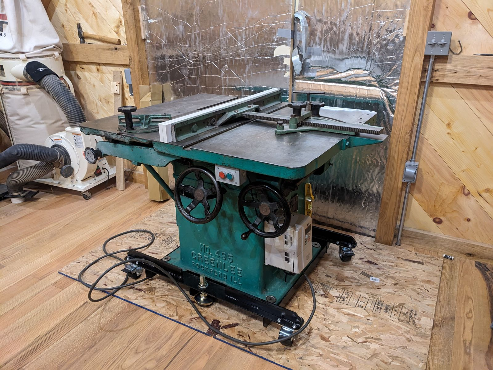
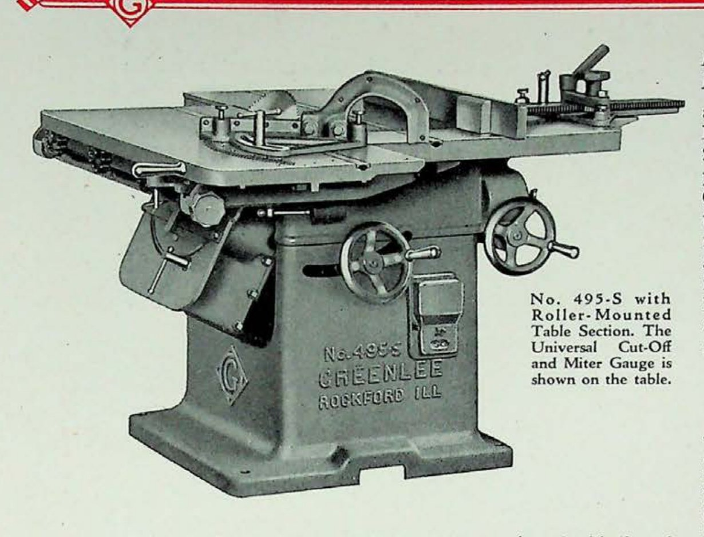

No. 495s Variety Saw, Special Model
Sliding-table variety saw · 400-Series · Serial & date under research

The machine
This page used to end in a question mark, and period print answered it. The machine is built on Greenlee’s 495 variety-saw pattern but is not a standard 495 — and the April 1930 catalog bulletin, reproduced below, documents exactly what it is: the No. 495-S, the sliding-table model, in which a roller-mounted table section to the left of the blade carries the work past the saw for square, repeatable cuts on long and wide stock. The universal cut-off and miter gauge rode on that sliding section as standard equipment.
This example
With the model identified, the research has narrowed: serial number and build date are still being traced through casting marks and serial records, and this page will be updated as the answers come in — museums earn trust by admitting what they do not yet know, and this collection intends to earn it. Restoration will follow the paperwork.
From the Catalog

“The No. 495-S machine has a roller-mounted, sliding table section to the left of the saw blade to make for greater efficiency on long runs of cutting-off, dadoing, etc.” Greenlee Bulletin No. 495 · April 1930
- Table
- 47″ × 40″
- Floor space, table travel
- 53″ × 74″
- Net weight
- 1,550 lbs
The photograph above is the machine that settled this page’s open question — the catalog documents the 495-S as the sliding-table model.
Catalog scan courtesy of VintageMachinery.org.